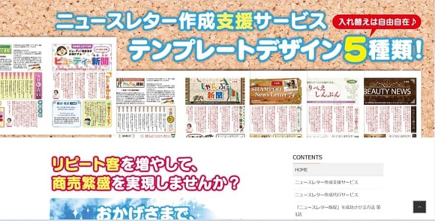
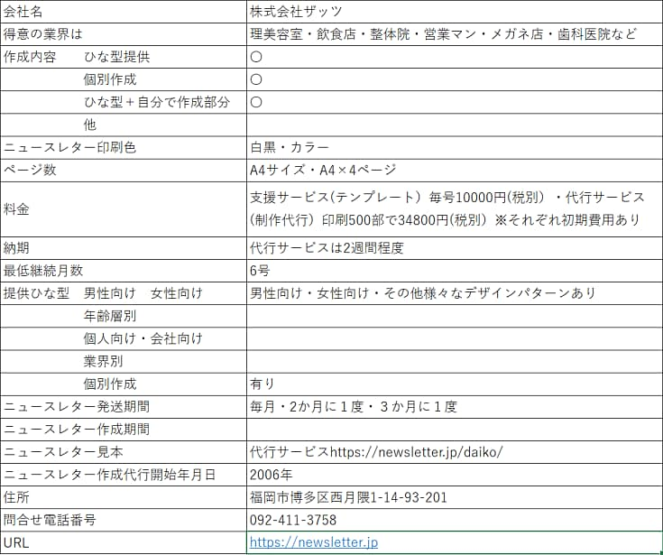
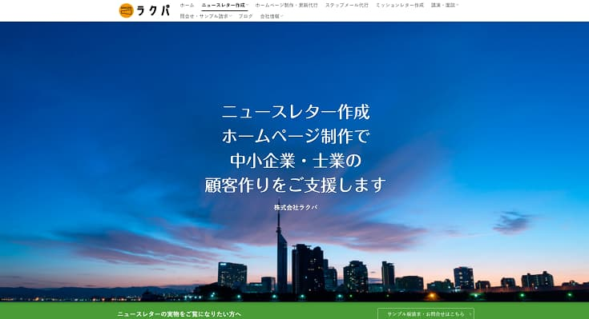
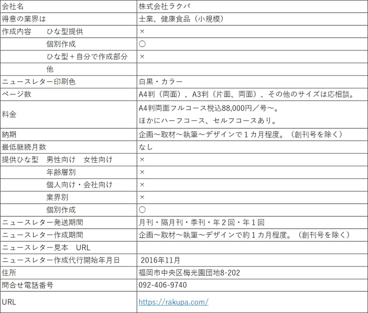
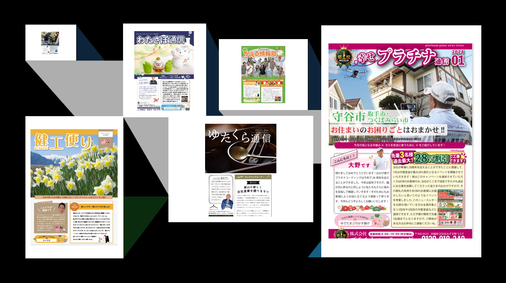
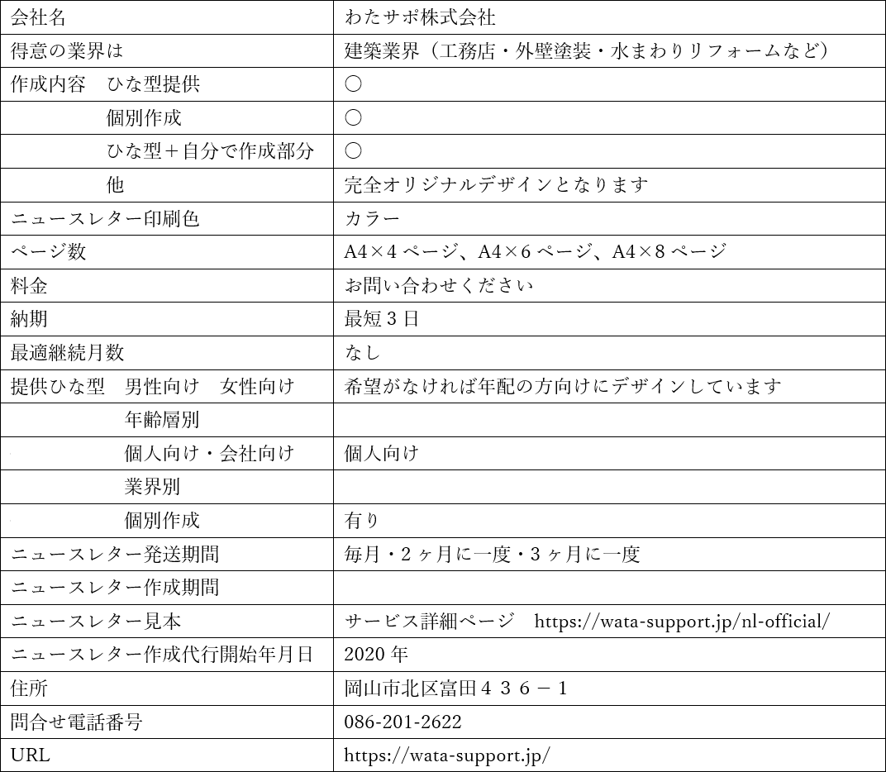
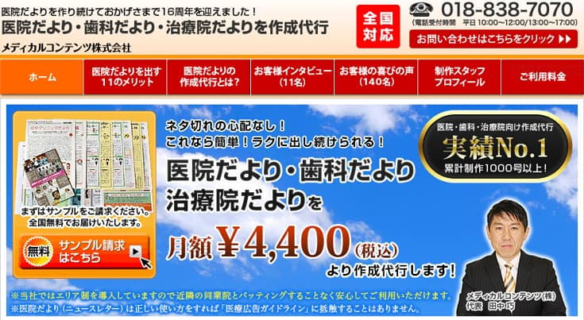
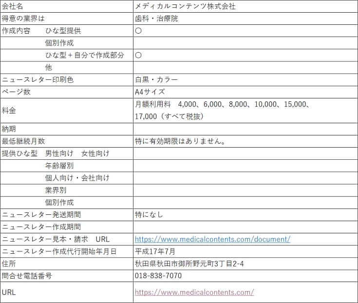
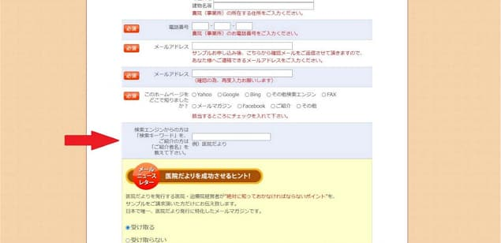

ニュースレター作成代行会社 比較
メディアボックスでニュースレター発送した客様は１００社を超えます。
しかしニュースレターを出したいと考えているが出せないでいるお客様が少なくありません。
定期的なニュースレター作成のハードルが高いからです。
当社でも私がオリジナルニュースレターを作成し続けています。
自分で一からニュースレター作成するのは結構な負担であるのは事実です。
そのためニュースレター発送ができずいる皆さんの気持ちはよくわかります。
ニュースレター発送のハードルが高い理由
・誰がかくの
・発送先リストの管理はどうするの
・ネタがすぐなくなる
・人様に見せられるような文章は書けない
・発送作業は誰がするの
・お客さんが読んでくれるの
他にも問題はたくさんあります
ハードルが一番高い理由はやはりニュースレター作成になります
ニュースレター作成は自社と作成代行会社で
ニュースレター作成はニュースレター作成代行会社に手伝ってもらう方法があります。
初めてのニュースレター発送はニュースレター作成代行会社に依頼し自社作成を最小限にして発送することをお勧めします。
ニュースレターをお客様に届けるのと届けないのでは数年後に大きな差になります。
継続して発送できる環境が出来たら迷わず出すことをお勧めします。
私も含め多くのニュースレター発送を続けている会社さんに「ニュースレター第１号を見せてください」と聞くと
ほとんどの会社さんが「恥ずかしくて見せられません」と言われます。
私も同じです。
今は立派なニュースレターをだしているお会社様でも初めはみんなそんなものです。
初めから完璧なニュースレター作成は目指さないことが成功の秘訣です。
それよりもコロナで市場が大きく変化した今がニュースレターでお客様との関係性を深めるチャンスです。
ニュースレター発送を実施するために作成代行会社に依頼して１年間出し続けてみてください。
きっと違う世界が見えるのではないでしょうか？
ニュースレターを出し続けて良かったこと（私の場合）
ニュースレター発送で一番大切なことは継続することです。
継続すると分かることは下記になります。
私豊田がニュースレターを出し続けて感じたことです。
１ 紹介が増える
２ リピートが増える
３ 重要事項を連絡するときにEメールよりも桁違いに読まれる
４ 離脱率が減少する
５ 一度離れたお客様が戻ってくる
６ 信頼関係が増す
７ 嬉しくなることが増える
例）
・担当者が○○に移動したのでそちらに送ってください
・○○の記事、役に立ちました
・毎月見てます
・当社でもニュースレターを出したい
ニュースレター作成代行会社 紹介サイト
メディアボックスではニュースレター作成を行うニュースレター作成代行会社をご紹介することにしました。
作成代行会社に依頼することにより、ニュースレター作成の一番大きなハードルを越えてもらうのが目的です。
ここで紹介するニュースレター作成代行会社さんは知人や評判を元に私が直接連絡をとり、サイト掲載することに承諾を頂いた会社様になります。
・建築業
・営業
・美容院
・飲食店
・整体院
・歯科医院
・士業
・治療院
等業界に特化した会社もあり、ニーズにマッチした作成代行会社に依頼することによってニュースレター作成の一番大きなハードルを越えてもらうのが目的です。
※当社では広告料など一切のお金を受けとっていません。
ニュースレター作成代行会社を選ぶコツ5つ
ニュースレター作成代行会社を選ぶにあたり基準がないと困ると思います。
主な基準をまとめました。
１ 自社のニュースレター発送先を考える
ニュースレター発送先が個人なのか法人なのか、また属性を考えて合致する代行会社を選ぶ
・個人（年齢層・性別・職種・興味があるもの）
・法人（業種・規模）
・オーダー
ニュースレター作成代行会社に直接問い合わせてください。
２ 自社作成範囲
ニュースレター作成をどこまで代行会社に行ってもらうかをきめる。
１ ひな型作成
２ ひな型＋自分で作成部分
３ 個別作成
３ ニュースレター発送地域が被らないか
「１ひな型作成」の場合は、同じ地域に同じ内容のニュースレターが届くことがあります。
同じニュースレターが２社から届かないか確認
４ 代行会社が得意な業界
ニュースレターひな型には誰にでも受け入れられる一般形と業界に特化したものがあります。
自社の業界に特化したニュースレター作成代行会社があれば優先的に選択肢に入れます。
また、自社用にひな型を作成してもらう方法もあります。
５ 相性
これが結構大切です。
初回発送までのやり取りで自社の考えや対応も含めて考える。
ニュースレター作成代行会社 特徴比較
ニュースレター作成代行会社様のホームページを検索し直接記載内容を質問してお答頂いた会社様を掲載させていただきました。
ニュースレター作成代行会社をお探しの会社様は参考にしていただければ幸いです。
掲載させていただいた会社様からの料金は頂いていません。
株式会社ザッツ


● 御社を使うメリット
日本初のニュースレター専門書「最新版 売れる＆儲かる！ニュースレター販促術」を出版
https://amzn.to/2W43ruB
2006年からサービスを開始し、長年の実績を元にニュースレターを作成します。
単純に「ニュースレター」の形で発行しても大きな効果は得られませんが、「正しい方法」でニュースレターを制作し発行すればお客様がファン客化し、来店頻度や客単価が上がり、売上げアップと共に利益アップが実現します。
そのノウハウを全てご提供します。
● 相性の良いお客様像を教えてください
お客様と直接接する店舗系（理美容室・飲食店・整体院・営業マン・メガネ店・歯科医院など）は特にニュースレターと相性が良いです。
● ニュースレター作成会社を選ぶ時のポイント教えてください
テンプレートやデザイン以外に、「ニュースレター販促」をしっかり理解している業者さんを選ぶべきだと思います。
● キャンペーン情報
豊田さんのご紹介で「初期費用50％OFF」させていただきます。
申込時に「豊田さんの紹介」とお伝えください。
株式会社ラクパ


● 御社を使うメリット
弊社のニュースレターは、ひな形を使わず、クライアント毎にオリジナルの内容とデザインのニュースレターを制作しています。
競合とデザインや内容がかぶることは一切ありません。
また、面倒なご挨拶文作成も、弊社のライターがインタビュー取材（Zoomや電話等）して執筆します。取材は弊社が用意した質問に答えていくだけですので、非常に簡単です。経営者にとって時間はもっとも重要です。無駄な時間を取られることなく、ニュースレターを制作することができます。
● 相性の良いお客様像を教えてください
既存客でもっとも多いのは、士業事務所、小規模な健康食品会社などです。
ニュースレターの目的は、文章を通じて既存客や見込み客とのつながりを深め、信頼関係を構築することです。
士業、健康食品などの分野では、専門的な知識を分かりやすく伝えることが顧客づくりに非常に役立ちます。
ですが自社でニュースレターを作ると、どうしても専門用語が多くなってしまい、読み手に伝わりにくくなってしまう傾向があります。
ニュースレター制作を外部に依頼することで、誰が読んでもわかりやすい文章で伝えることができます。
ただし、弊社は、テンプレート（ひな型）を使いませんので、制作料金はどうしても割高になります。ですので、飲食店や理美容室など、客単価がそれほど高くない業界の場合は弊社のニュースレターは不向きです。
● ニュースレター作成会社を選ぶ時のポイント教えてください
ニュースレターの制作事例を取り寄せて確認するのが一番です。
ニュースレターは最終的には印刷物になりますので、PDFで確認するのではなく、紙媒体での確認が必須です。
届いたサンプルを確認して、自社が発行する紙媒体として相応しいかどうかをじっくりとご判断ください。
また、ニュースレターは一度発行し始めると、長く続けることになります。
長いお付き合いになることを考えると、選ぶポイントとしては、「相性の良さ」も大事です。
ちなみに、弊社の場合は、基本的な顧客対応はすべて代表の園田が行っていますので、まずは一度ご連絡頂ければ、「相性」がすぐに分かります(笑)
● キャンペーン情報
不定期に行う場合があります。弊社サイトで告知させて頂きます。
わたサポ株式会社


わたサポ ニュースレターページ https://wata-support.jp/nl-official/
＋自分で作成部分
*/ ?>
● 御社を使うメリット
当社のニュースレター制作代行は30分の打ち合わせだけでオリジナルニュースレターを作成できます。建築業界のお客様から「日本で唯一のサービス」と評価していただける理由は以下の3つです。
① 「ネタが出ない」「書けない」「顧客への発送が面倒くさい」など作成にあたりネックだった部分を全て解消できる
② デザインがお洒落で、会社独自の内容も毎月入るので読みたくなる
③ 他社の活用事例などアドバイスがもらえる
過去に制作した多くの会社のニュースレターを使って構成のABテストを繰り返しており、反響が出やすい構成を熟知しています。制作するわたサポ(株)が経営する岡山のリフォーム会社でも同じニュースレターを使って集客に成功しており、再現性が高いものとなっております。
● 相性の良いお客様像を教えてください
建築業界（工務店・外壁塗装・水まわりリフォーム・エクステリアなど）は特にニュースレターと相性が良いです。
新規集客に苦戦している外壁塗装や工務店がニュースレターを使って新規集客に成功している事例も豊富にあり、そちらも併せてご紹介できます。
● ニュースレター作成会社を選ぶ時のポイント教えてください
業界の特性やニュースレターを使った販促の方法をしっかり理解している業者さんを選ぶべきだと思います。
● キャンペーン情報
豊田さんのご紹介で「初回にかかる構成料50％OFF」とさせていただきます。
申込時に「豊田さんの紹介」とお伝えください。
メディカルコンテンツ株式会社


● 御社を使うメリット
●定期的にデザイン変更やコーナー変更を行い、読者の方に飽きさせないような紙面づくりを心掛けている
●弊社スタッフが電話やメールで懇切丁寧に対応。仮にパソコン操作が苦手なお客様でも、しっかり使いこなせるようになるまで対応している
●印刷やDM発送代行も併せて行っているため、作成～印刷～DM発送まで「ワンストップ」で対応可能
●ニュースレター作成１０年以上経験のデザイナーが携わっているためデザイン性が高い
●各分野の専門ライターが原稿を書いているため内容が面白い
●創業１６年、ニュースレター代行会社の中では最も古いため、利用者も安心して利用ができる
●効果的なニュースレターの使い方のアドバイスができる
●高頻度でご利用者の方にアンケート調査を行い、なるべくニーズに答えられるよう対応している
●印刷注文時はデータをそのまま送るだけで入稿可能なため、一般的な印刷会社に入稿する際の難しい手順は不要
●テンプレート形式でありながらオリジナルコーナーを作りやすく、作るのに慣れてきたら自院の個性も出せる
●カラフルで読みやすいデザインで、目が見えづらくなってきたご年配の読者さんにも配慮している
●診療日カレンダーやアクセスマップや似顔絵など、ニュースレター以外にも使えるサービスにも対応
● 相性の良いお客様像を教えてください
●内科・歯科・訪問医療サービス・治療院などの「医療機関」や「医療施設」
●スタッフ数が少ない人手不足の医療機関や医療施設
●日常業務が多忙で作る時間のない先生
●文章を書くのが苦手な先生
●デザインを作ったり考えたりするのが苦手な先生
●患者さんと対面でコミュニケーションをとるのがあまり得意ではない先生
●患者さんにお届けしたい情報、伝えたいことがたくさんある先生
●紙媒体での情報提供を重視している先生
●何か新しいことをはじめたいがあまり時間を取れない先生
●増患対策にお悩みの先生
● ニュースレター作成会社を選ぶ時のポイント教えてください
●エリア制は導入しているか？また、エリアの範囲はどれくらいあるか？
⇒作成代行会社が提供しているもののほとんどは「テンプレート」です。利用者は自分でネタを考える必要がなく、内容が充実したものを短時間で作れて安価なことからとても人気のサービスですが、その会社がご利用者同士のバッティングについてどれだけ配慮しているかどうかという点に注意しなければなりません。
あなたが利用している代行会社がエリア制を導入せず、利用者をどんどん増やしているとしたら、あなたの近所にある同業者が全く同じものを出しているかもしれません。
「ライバルと同じニュースレターを出していた…」ということにならないよう、「エリア制を導入しているか」と「エリアの範囲」はしっかり確認するようにしましょう。
●「著作権」や「肖像権」にしっかり配慮している会社か？
⇒ニュースレターには「イラスト」や「写真」が載っていることも大切な要素です。
読者の方にも楽しみにしていただけますし、集患メディアとしての効果も最大限に高まります。
したがって、作成代行会社を選ぶ際も「イラストや写真がたくさん載っていて楽しそうな紙面のニュースレターを制作している」という点を考慮して代行会社を選ぶようにしましょう。
しかし、作成代行会社の中には著作権や肖像権に対する意識が低いため、他人のイラストや写真を抵抗感なく載せている業者もいます。
こういった著作権や肖像権に配慮せずに使ったものが見つかると、最悪の場合、民事上の損害賠償請求や、場合によっては刑事罰を受けることもありますので十分に注意しましょう。
●テンプレートだけの会社か？それとも、トータルでサービスしている会社か？
⇒テンプレートにかける費用は安いに越したことはありませんが、実際にテンプレートだけあっても、それを印刷しなければ
患者さんに渡すことができませんし、自宅に発送する場合はその準備や費用も必要になります。
「印刷や発送は自分で行う」という方もいらっしゃいますが、このような作業をご自身やスタッフさんが行うとなると、
人件費、紙代、インク・トナー代、封筒代、郵送代などが発生してしまいます。
したがって作成代行会社を選ぶ場合は、テンプレートだけ提供しているところよりも、プラスして「印刷」や「発送」
などもサポートしてくれる会社を選んだ方が、手間もかからずトータルで安くつくこともあります。
●あなた自身がそのニュースレターを読んで面白いと思うか？
⇒ニュースレターを出すからには、読者の方から楽しみにしてもらえるものを出したいですよね。
ニュースレターは無料で配るものですが、だからといって内容がつまらなければ楽しみにしていただけませんし、長く愛されるものにもなりません。
無料で読ませるものというのは、読者からすると時に「“無料だから”面白くなければ別に読まなくてもいい」という、とても厳しい判断を下されてしまいます。
また、「デザインの良し悪し」もしっかりチェックしましょう。イギリスの科学雑誌「ネーチャー」によると、
人間は一瞬（最初の0.5 秒）でその媒体を読むかどうかを判断するそうです。
したがって、デザインの良し悪しも手に取って読ませるための重要なポイントになります。
●「お客様の声」をしっかり確認しましたか？
⇒作成代行会社を選ぶ目安として、実際にその会社のサービスを利用している「お客様の声」を参考にされる方も多いのではないでしょうか？
まず、お客様の声は「手書きでいただいたものなのかどうか」「顔写真が載っているかどうか」「届いた日付が明記されているか」を確認しましょう。
手書きではないもの、顔写真が載っていないもの、届いた日付が明記されていないものは、その作成代行会社が自作自演でつくったお客様の声かもしれません。
⇒簡単に作れるテンプレートでも、写真を挿入したり文章を入力したりと、多少なりともご自身で編集をすることもあるかと思います。
もちろん、パソコン操作が得意という方であれば特に心配はいりませんが、あまり得意ではない場合、ちょっとした操作でもかなりの時間がかかってしまいます。
すると回を重ねるごとに作業が面倒になり、途中で挫折してしまう原因にもつながってしまいます。
そこで、作成代行会社を選ぶ際のポイントとして「操作や使い方をしっかりできるようになるまでフォローしてくれるサポート体制があるかどうか」についても注意してみましょう。
使い方で分からないことがあったときや、ニュースレターの出し方で悩んだとき、気軽に相談できるサポート環境があれば、
ニュースレターを初めて出す方でも安心して利用することができますよね。
● キャンペーン情報
メディアボックスさんのサイト経由からサンプル請求をしていただき、当サービスをお申込みされたお客様には「最初の３か月間のご利用料金を５０％OFF」させていただきます。
サンプル請求フォーム（https://www.medicalcontents.com/document/）の中の「ご紹介者名」をご入力いただける欄に「メディアボックス様」とご入力いただき、サンプルをご請求いただきますようお願いいたします。

上の赤矢印のところに「メディアボックス様」とご入力いただいてサンプルをご請求願います。